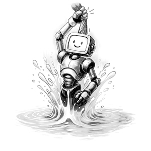
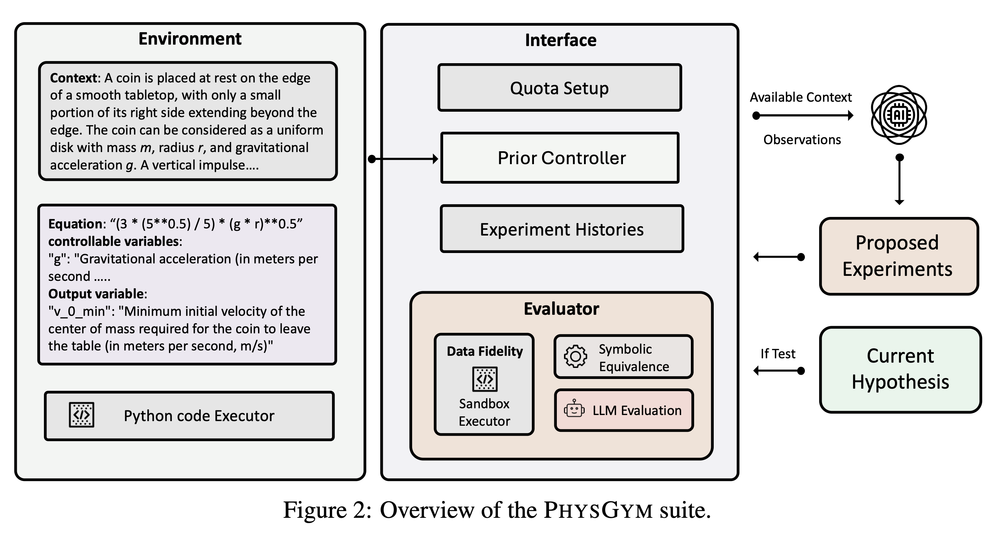
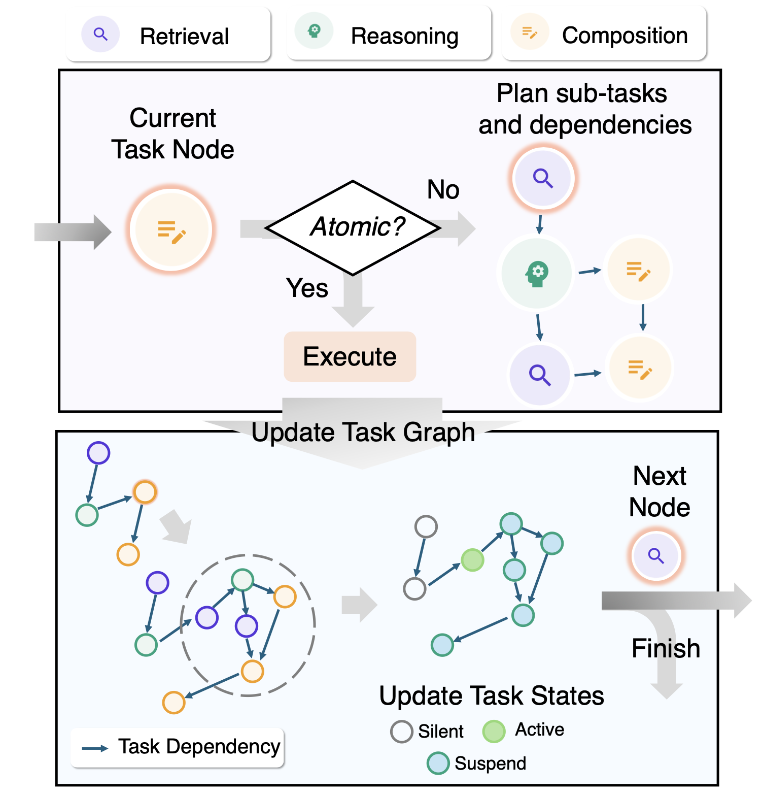
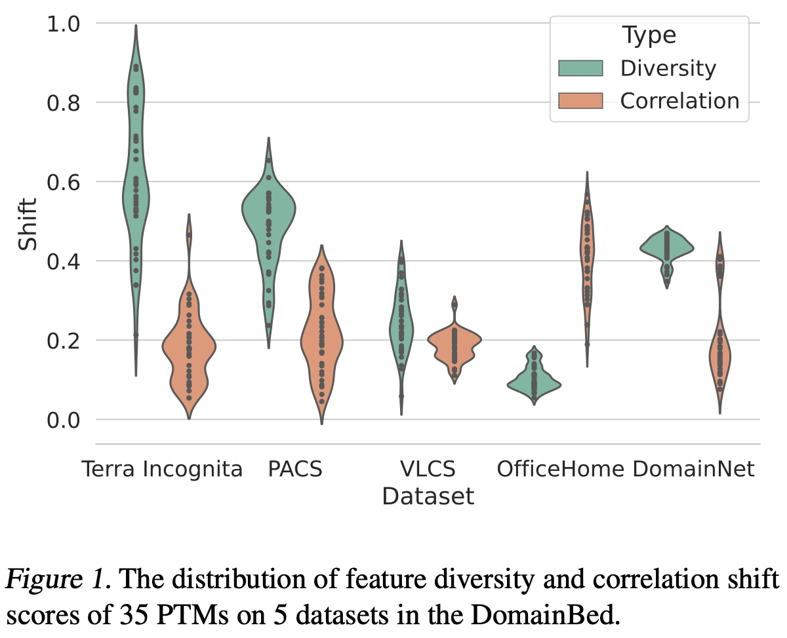
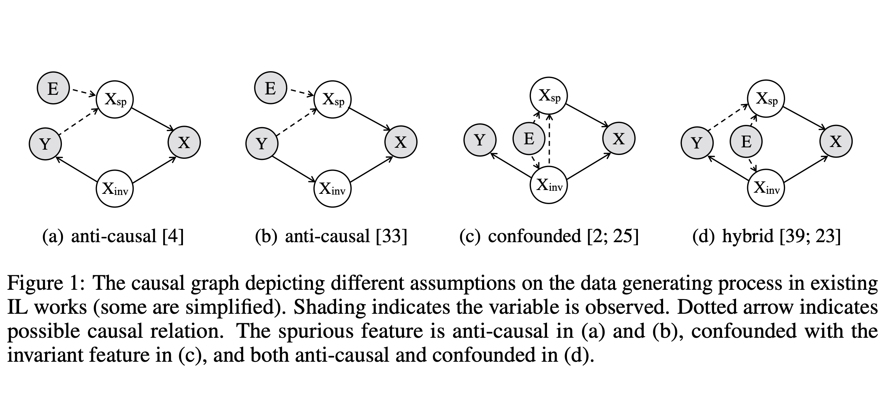

About Me
I am currently a Postdoctoral Researcher in Prof. Jürgen Schmidhuber's group at King Abdullah University of Science and Technology (KAUST).
My research interests lie at the intersection of machine learning and reasoning. Currently, I focus on:
- LLM-based Planning & Reasoning: Developing agents capable of recursive planning and adaptive long-form generation.
- AI for Science: Interactive discovery of physical laws and properties using large models.
- Self-Improving Agents: Theoretical frameworks for agents that can self-optimize towards human-level coding and reasoning.
Previously, I received my Ph.D. in Statistics from the University of Chinese Academy of Sciences (UCAS), advised by Prof. Zhiming Ma and Prof. Yanyan Lan.
News
- Oct 2025 "Huxley-Gödel Machine" released on arXiv.
- Sep 2025 One paper on Interactive Physics Discovery (PhysGym) accepted to NeurIPS 2025.
- Sep 2025 One paper on Long-form Writing accepted to EMNLP 2025 (Oral, Outstanding Paper Nominated).
- Jul 2025 One paper on LLM Acceleration (SepLLM) accepted to ICML 2025.
- Oct 2024 Joined KAUST as a Postdoctoral Researcher in Schmidhuber's Group.
Selected Publications
(* indicates equal contribution)





Work Experience
Postdoctoral Researcher
Oct 2024 - Present
King Abdullah University of Science and Technology (KAUST)
Advisor: Prof. Jürgen Schmidhuber
Senior Algorithm Engineer
Aug 2023 - Oct 2024
Research Center for Data Storage, Huawei Inc.
Research Intern (AI Theory)
Apr 2022 - Apr 2023
Huawei Noah's Ark Lab
Education
Ph.D. in Statistics
Sep 2018 - June 2023
University of Chinese Academy of Sciences (UCAS)
Advisor: Prof. Zhiming Ma & Prof. Yanyan Lan
B.S. in Physics
Sep 2014 - June 2018
University of Chinese Academy of Sciences (UCAS)
Advisor: Prof. Hong Ding
Honors & Awards
- CAS Dean Scholarship (2020)
- UCAS Merit Student (2014-2016, 2019-2020)
- UCAS Academic Scholarship (2014-2016)